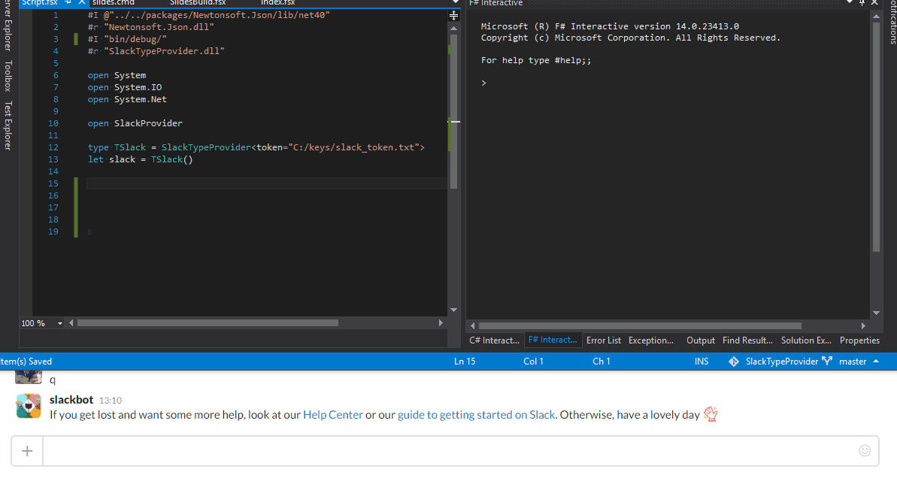

namespace System
namespace System.IO
namespace System.Net
namespace SlackProvider
type TSlack = SlackTypeProvider<...>
Full name: Index.TSlack
Full name: Index.TSlack
Multiple items
namespace SlackTypeProvider
--------------------
type SlackTypeProvider
Full name: SlackProvider.SlackTypeProvider
Get your token at url: https://api.slack.com/tokens
namespace SlackTypeProvider
--------------------
type SlackTypeProvider
Full name: SlackProvider.SlackTypeProvider
Get your token at url: https://api.slack.com/tokens
val slack : SlackTypeProvider<...>
Full name: Index.slack
Full name: Index.slack
property SlackTypeProvider<...>.Channels: SlackTypeProvider<...>.ChannelsType
property SlackTypeProvider<...>.ChannelsType.xamarininsights: SlackTypeProvider<...>.ChannelType
Get channel with id C04085Z39
Get channel with id C04085Z39
SlackTypeProvider<...>.ChannelType.Send(message: string, ?botname: string, ?asuser: bool, ?iconUrl: string) : bool
Send a message to a channel
Send a message to a channel
property SlackTypeProvider<...>.Users: SlackTypeProvider<...>.UsersType
property SlackTypeProvider<...>.UsersType.romain_flechner: SlackTypeProvider<...>.UserType
Get user with id U040ADW4W
Get user with id U040ADW4W
SlackTypeProvider<...>.UserType.Send(message: string, ?botname: string, ?asuser: bool, ?iconUrl: string) : bool
Send a message to a channel
Send a message to a channel
Slack TypeProvider

by @rflechner
What is Slack TypeProvider?
- A small F# library providing properties and methods generated form Slack API
- An experimental use of F# Type Providers
What is the use?
- Write a little bot sending messages on Slack with an autocomplete on user or channel list.
Getting started
Get an API token
Method1: Using your account
Get your token at url: https://api.slack.com/tokens
Method2: Using your account
Create a bot account.
Go to https://{your_company}.slack.com/apps/manage
Then click on "Custom Integrations" and "Bots"
NuGet
Get the NuGet package
Is it easy to use ?
See example below

1: 2: 3: 4: 5: 6: 7: 8: 9: 10: 11: 12: 13: 14: |
|
For FAKE users
See FAKE website.
Modify your build.cmd or build.bat
In a project using NuGet, you can have something like:
1: 2: 3: 4: 5: 6: 7: 8: 9: |
|
If you are using Paket, simply append 2 lines in your paket.dependencies:
1: 2: |
|
Modify your build.fsx
1: 2: |
|
Then you will be able to add slack notifications in your targets